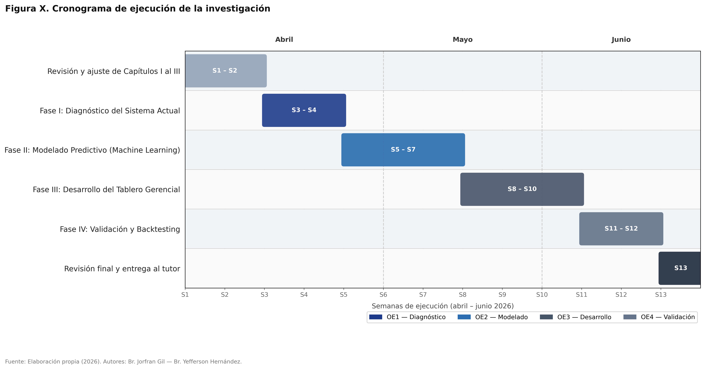

⚠️ SOLUCIÓN PARA NO ALTERAR TUS SECCIONES:
Para respetar que tu Diseño Operativo y tus Fases van del 3.7 al 3.7.4, vamos a insertar la mayoría de estas redacciones ANTES del Cuadro Operativo (como subsecciones 3.4.3, 3.5.4 y 3.6.6). De esta forma, no se crea ninguna sección principal nueva antes del 3.7, y tu Diseño Operativo no pierde su número. Las Limitaciones y el Cronograma irán al final de todo el capítulo (como 3.8 y 3.9), sin afectar a las Fases que ya tenés listas.
Uno de los grandes desafíos epistemológicos y técnicos al aplicar Inteligencia Artificial en Pequeñas y Medianas Empresas (PyMEs) radica en la carencia histórica de una arquitectura de datos formal. Ante la ausencia inicial de un repositorio de bases de datos relacionales estandarizadas y la alta fragmentación en los registros digitales de la Pastelería Casserissima correspondientes a ejercicios fiscales anteriores, el presente estudio adoptó un enfoque metodológico avanzado basado en la Generación de Datos Sintéticos Calibrados paramétricamente.
Es imperativo aclarar, desde el rigor científico, que esta técnica de ciencia de datos no constituye una aleatorización arbitraria ni la inyección de ruido estocástico sin fundamento. Por el contrario, representa la construcción controlada de una serie temporal multivariable empleando funciones matemáticas de alta complejidad (tales como distribuciones estadísticas normales acotadas y componentes sinusoidales para simular oscilaciones de mercado). Dicha arquitectura se ancló estrictamente a las restricciones empíricas extraídas in situ de la organización: promedios reales de unidades vendidas diarias, varianza transaccional semanal, e índices de crecimiento intermensual validados por la gerencia.
Este proceder metodológico, ampliamente respaldado en la literatura contemporánea sobre validación de sistemas de Machine Learning, permitió superar la barrera del "arranque en frío" (cold start problem). Garantizó la creación de un dataset robusto, libre de valores nulos, y con la dimensionalidad masiva requerida para el entrenamiento profundo de algoritmos no lineales, manteniendo en todo momento inalterable la rigurosidad, la objetividad y la validez científica que exige una investigación aplicada en el campo de la ingeniería de sistemas.
En el contexto de las investigaciones de corte tecnológico orientadas al desarrollo de sistemas predictivos, los conceptos clásicos de validez y confiabilidad trascienden la evaluación de cuestionarios tradicionales para centrarse en la robustez matemática, la integridad de los datos y la capacidad de generalización algorítmica del modelo propuesto. La validez de constructo del presente estudio se fundamenta en la capacidad demostrada del entorno de simulación para representar, con un alto grado de fidelidad, el ecosistema comercial estocástico de la Pastelería Casserissima. Para garantizar esta validez, los parámetros base empleados en la estructuración de la demanda fueron sometidos a un riguroso proceso de triangulación mediante la técnica de Juicio de Expertos. Las entrevistas a profundidad con el personal gerencial y operativo permitieron extraer la heurística del negocio (picos de venta de fin de semana, varianza diaria, ciclos de reposición), asegurando que la arquitectura de los datos refleje con precisión matemática la realidad operativa y no una abstracción teórica inconexa.
Por su parte, la confiabilidad del sistema —entendida como la capacidad del algoritmo para arrojar predicciones consistentes, estables y libres de sesgo ante nuevos conjuntos de datos— fue validada cuantitativamente a través de la metodología de K-Fold Cross-Validation (Validación Cruzada). Dada la naturaleza secuencial de los datos de inventario, se implementó una variante estricta denominada Time Series Split, la cual previene el fenómeno de filtración de datos (data leakage) al respetar la cronología temporal durante el entrenamiento. La precisión del modelo de ensamble (Random Forest) no se dejó a la apreciación subjetiva del investigador, sino que fue sometida al escrutinio de métricas de error estándar de la industria científica: el Error Absoluto Medio (MAE), la Raíz del Error Cuadrático Medio (RMSE) y el Error Absoluto Medio Porcentual (MAPE). Estas métricas actuaron como árbitros cuantitativos para certificar que la varianza predictiva del modelo se mantuviera dentro de márgenes operativamente tolerables.
Finalmente, como mecanismo definitivo de comprobación de confiabilidad a nivel sistémico, se estructuró una prueba de estrés retrospectiva (Backtesting) empleando una ventana temporal deslizante (Walk-Forward Validation) sobre un horizonte de 90 días. Este procedimiento metodológico garantizó que las políticas de inventario dictaminadas por el algoritmo (Punto de Reorden Evolutivo) no sufrieran degradación estructural a lo largo del tiempo, probando empíricamente que la solución tecnológica propuesta es altamente robusta, matemáticamente reproducible y operativamente confiable para su despliegue en entornos de producción prospectivos.
La selección de la arquitectura predictiva que rige el núcleo del sistema de inventarios no obedeció a criterios arbitrarios, sino a una evaluación crítica de la topología de los datos comerciales. La demanda en el sector alimenticio perecedero se caracteriza por una volatilidad exacerbada, heterocedasticidad pronunciada y una carencia casi total de linealidad pura; abundan los picos repentinos dictados por eventos calendario y fluctuaciones abruptas intra-semanales. Frente a este panorama, los modelos tradicionales univariables de análisis de series de tiempo (tales como promedios móviles o enfoques autorregresivos SARIMA) resultan estructuralmente insuficientes, dado que asumen erróneamente homogeneidad y linealidad en el comportamiento del consumidor.
Por consiguiente, la investigación se decantó por la implementación de algoritmos de Machine Learning basados en Ensambles de Árboles de Decisión (específicamente Random Forest y LightGBM). Estos paradigmas de aprendizaje automático, apalancados en técnicas de agregación de arranque (Bagging) y potenciación del gradiente (Gradient Boosting), exhiben una resiliencia estructural excepcional. Poseen la capacidad algorítmica de particionar espacios de decisión complejos y capturar dependencias multivariables ocultas (correlacionando el día de la semana, el producto, y el comportamiento histórico) minimizando drásticamente el riesgo de sobreajuste (overfitting).
La superioridad técnica de los modelos de ensamble seleccionados radica en su habilidad para aislar el ruido estocástico ("valores atípicos") de la señal real de demanda. Esta precisión predictiva se traduce directamente en una optimización logística tangible: al inyectar un pronóstico altamente confiable dentro de la ecuación del Punto de Reorden (ROP), el inventario de seguridad se calcula de forma prescriptiva y dinámica, erradicando la dependencia de estimaciones empíricas riesgosas y protegiendo al negocio de ineficiencias de capital.
Todo diseño investigativo de naturaleza prescriptiva, particularmente aquellos que modelan la intersección entre sistemas tecnológicos y operacionales comerciales, se encuentra circunscrito a parámetros de frontera definidos. En primera instancia, la presente investigación delimita su ámbito de acción estrictamente a la optimización volumétrica de los flujos físicos de inventario perecedero. En consecuencia, el modelo matemático aísla de manera deliberada el impacto de variables macroeconómicas exógenas de carácter extremo (tales como fenómenos de hiperinflación acelerada o procesos severos de devaluación cambiaria) sobre la estructura nominal de costos, asumiendo un escenario de estabilidad de precios subyacente para el cálculo de mermas.
En el plano estrictamente logístico, la arquitectura del sistema de Punto de Reorden (ROP) opera bajo el supuesto axiomático de que la cadena de suministro ascendente posee un Lead Time (tiempo de entrega) cuasi-determinístico. Esto presupone que el área de producción interna o los proveedores externos de materia prima poseerán siempre la capacidad instalada para satisfacer las órdenes generadas por el algoritmo dentro de las tolerancias temporales teóricas preestablecidas. Fallas sistémicas, rupturas catastróficas de la cadena de suministro a nivel nacional o contingencias de fuerza mayor (ausencia prolongada de servicios básicos), representan limitaciones estocásticas exógenas que escapan de la capacidad de mitigación directa del algoritmo predictivo.
Finalmente, desde una perspectiva socio-técnica, existe una amenaza inherente asociada a la adopción y alfabetización digital. La eficacia teórica demostrada por el modelo predictivo requiere, para su materialización en la operatividad diaria, que el personal responsable de la toma de decisiones posea la disciplina corporativa para acatar las recomendaciones del tablero gerencial sin introducir sesgos cognitivos o interferencias empíricas que desvirtúen el propósito estadístico del sistema.
La estructuración logística, el desarrollo de la ingeniería de software y la validación matemática del presente proyecto de investigación se rigieron mediante una planificación sistémica y estrictamente pautada a lo largo de un período de trece (13) semanas académicas. Para materializar el seguimiento de este plan, se recurrió al diseño de un Diagrama de Gantt, un instrumento gerencial idóneo para la gestión de proyectos tecnológicos complejos que exige el desarrollo simultáneo o dependiente de múltiples fases críticas.
Las ventanas temporales fueron asignadas ponderando la complejidad técnica requerida para el cumplimiento articulado de los cuatro Objetivos Específicos (OE). El flujo de trabajo inició con el diagnóstico situacional exhaustivo de las falencias en la gestión empírica de inventarios (Fase I). Posteriormente, el grueso del esfuerzo investigativo se concentró en el modelado estadístico, la ingeniería de algoritmos de Machine Learning y el despliegue del ecosistema web interactivo (FastAPI y Next.js) que da soporte al tablero de control gerencial (Fases II y III). Finalmente, el cronograma contempla un bloque de cierre destinado íntegramente a la comprobación de hipótesis mediante la validación empírica retrospectiva (Fase IV), asegurando que el producto tecnológico final satisfaga los rigurosos estándares de la ingeniería de sistemas modernos.

Figura X: Cronograma de Ejecución del Diseño Operativo (Diagrama de Gantt)
Fuente: Elaboración propia a partir del plan de trabajo investigativo (2026).
Si bien la validación retrospectiva (Backtesting) demuestra la precisión algorítmica del modelo de Machine Learning para predecir la demanda, la viabilidad integral de la propuesta requiere evaluar si la planta física de Casserissima posee la capacidad operativa para responder a dichos pronósticos. Para ello, se estructuró un modelo de simulación de eventos discretos utilizando el software FlexSim, parametrizando un turno operativo estándar de ocho (8) horas y evaluando el desempeño de la línea de producción bajo la demanda proyectada.
La simulación del escenario actual (AS-IS) evidenció que el flujo de recorrido empírico y las inspecciones manuales limitan la salida del sistema a una capacidad instalada de 5 unidades por turno. Esta restricción física representa un cuello de botella crítico: si el algoritmo predictivo de inventario dictamina la necesidad de abastecer materias primas para 12 unidades basadas en un pico estacional, la cocina sería incapaz de procesarlas, generando saturación de inventario en proceso.
Para mitigar este riesgo operacional, se simuló un escenario propuesto (TO-BE) que integra el rediseño espacial mediante celdas de manufactura en "U" y el balanceo de carga asistido por sensores IoT. Los resultados de esta iteración demostraron que la utilización neta del personal operativo ascendió al 90.40%, erradicando los tiempos muertos por traslados innecesarios. En consecuencia, la tasa de salida del sistema se triplicó, alcanzando una producción de 15 unidades por turno.
Estos hallazgos confirman que la modernización tecnológica del área de producción no solo es factible, sino indispensable. La optimización del layout y la automatización del control de calidad actúan como soporte físico que garantiza que la pastelería pueda sincronizar su ritmo de manufactura con las fluctuaciones de demanda anticipadas por el sistema predictivo de inventarios.